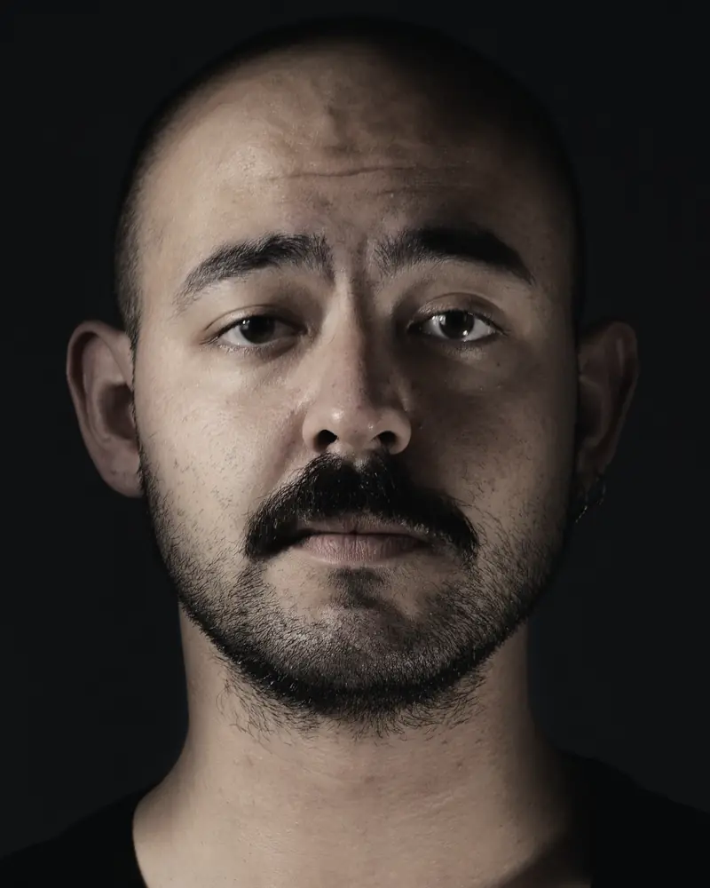
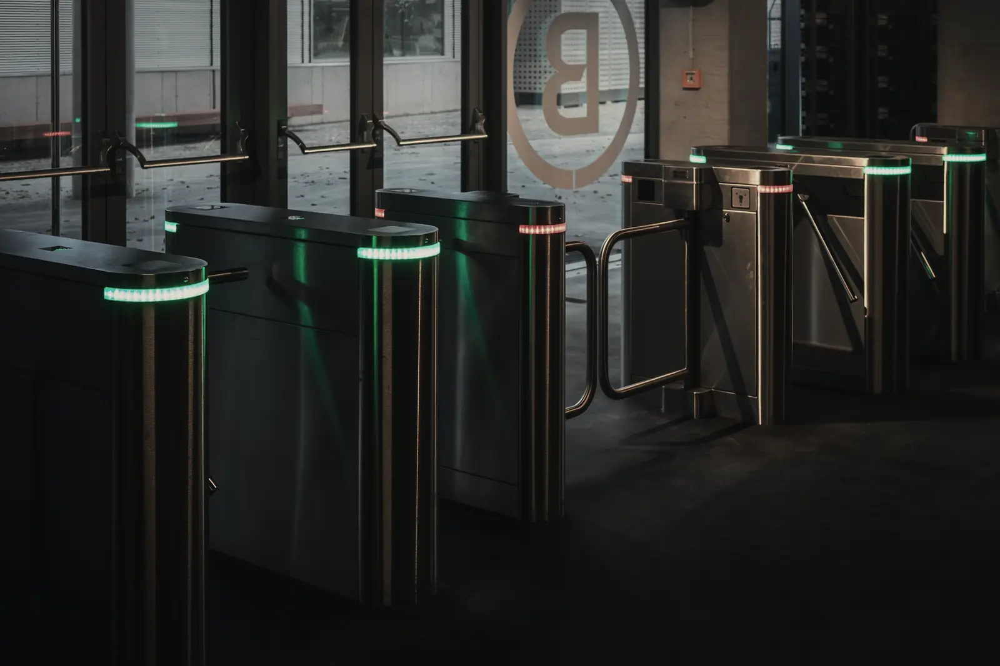

FaceAttend là hệ thống điểm danh bằng khuôn mặt cho văn phòng và lớp học: một kiosk ở cửa, một bảng điều khiển cho nhân sự, và bảng công tự tổng hợp cuối ngày.
Mỗi sáng, ở văn phòng và lớp học, có người gọi tên từng người. Có người ký hộ một chữ ký. Và cuối tháng, có người ngồi cộng lại từng giờ.
Gọi tên, đánh dấu từng ô, mỗi buổi.
Tờ giấy ký tên không biết ai đang cầm bút.
FaceAttend thay tất cả bằng một lần nhìn vào camera.

Đã điểm danh vào ca07:58Đúng giờ. Ca bắt đầu lúc 08:00.
Độ mở mắt0.28Ngưỡng nhắm mắt0.22Chớp mắt0/2
Điều gì xảy ra trong lúc bạn nhìn vào camera
478 điểm mốc
MediaPipe FaceLandmarker đặt 478 điểm lên khuôn mặt. Lưới bên cạnh là đúng những điểm mô hình tìm được trên bức ảnh này.
Độ mở của mắt
Sáu điểm quanh mỗi mắt cho ra tỉ lệ EAR. Trên ảnh này là 0.28. Dưới 0.22, mắt được tính là đang nhắm.
Hai lần chớp mắt
Đủ hai lần chớp thì đây là người thật, không phải một tấm ảnh giơ lên. Chưa đủ thì chưa so khớp.
Minh họa đường EAR khi chớp mắt hai lần
512 con số
Facenet512 biến khuôn mặt thành một vector 512 chiều rồi so cosine với từng người đã đăng ký. Từ 0.45 trở lên mới là khớp.
Đã có mặt
Lượt nhận diện được ghi thành giờ vào hoặc giờ ra của hôm nay. Thẻ kết quả trên ảnh là ví dụ minh họa.
Từ lần đăng ký đầu tiên đến bảng công cuối tháng.
1
Đăng ký khuôn mặt
Nhân sự tạo hồ sơ, hoặc nhập cả danh sách từ Excel/CSV, rồi chụp khuôn mặt từng người một lần: nhìn thẳng, nghiêng trái 15°, nghiêng phải 15°. MTCNN tìm khuôn mặt, Facenet512 lưu lại thành vector.
Có ô đồng ý thu thập sinh trắc học, và mỗi lần đồng ý được ghi vào nhật ký.

2
Nhận diện ở cửa
Kiosk mở camera, đếm chớp mắt rồi gửi khuôn mặt đi so khớp qua một kết nối WebSocket. Khuôn mặt chưa đăng ký hiện là người lạ; ở camera giám sát, người lạ còn tạo cảnh báo cho nhân sự.
Camera trục trặc thì nhân viên điểm danh dự phòng bằng mã PIN 4 số.
3
Ghi công theo ca
Giờ vào ra được so với ca làm việc hoặc buổi học: trễ quá ngưỡng của ca (mặc định 15 phút) là đi trễ, ra trước giờ kết thúc là về sớm.
Dashboard trong ngày, báo cáo công theo từng người, xuất Excel theo khoảng ngày. Sửa công thủ công được, và luôn ghi lại ai đã sửa.